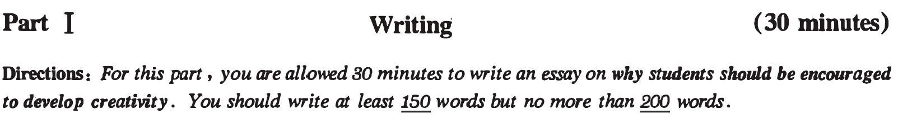
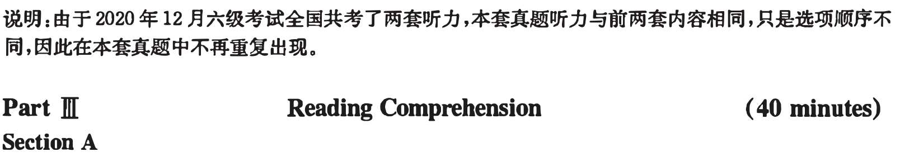
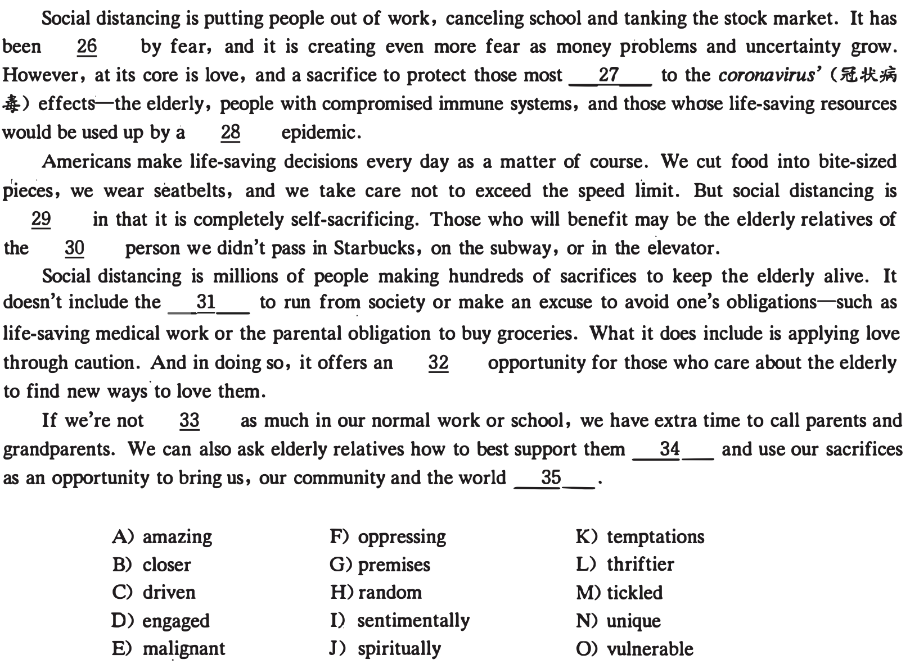
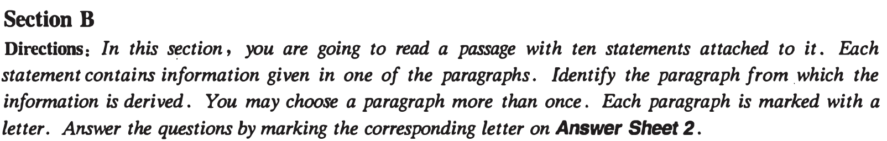
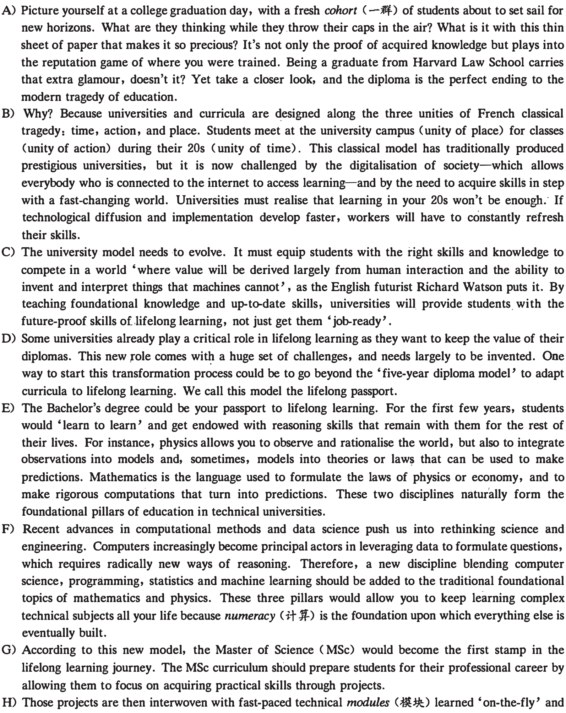
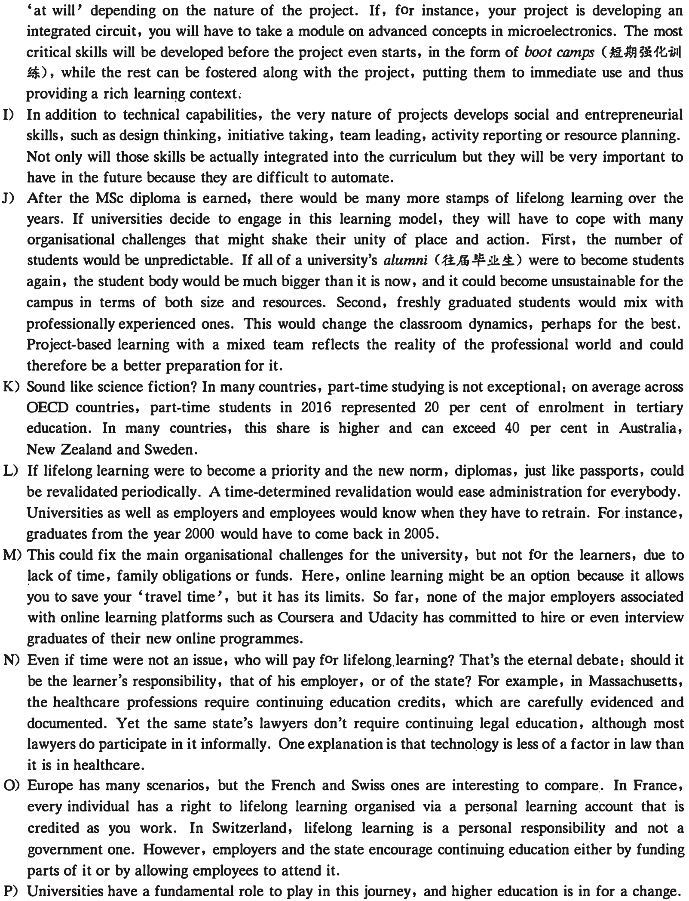
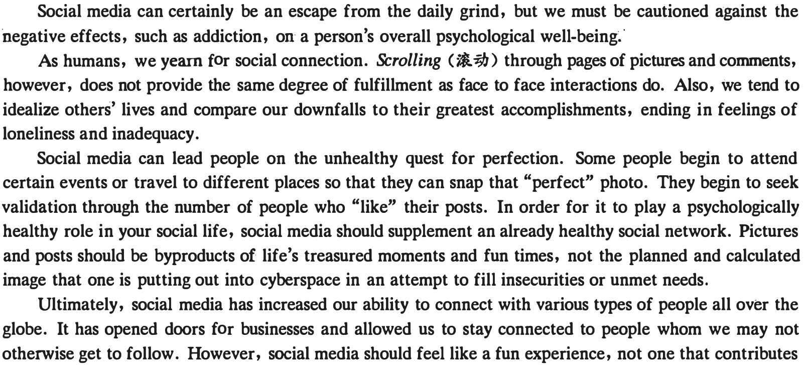
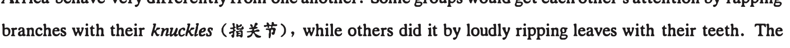
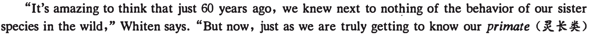
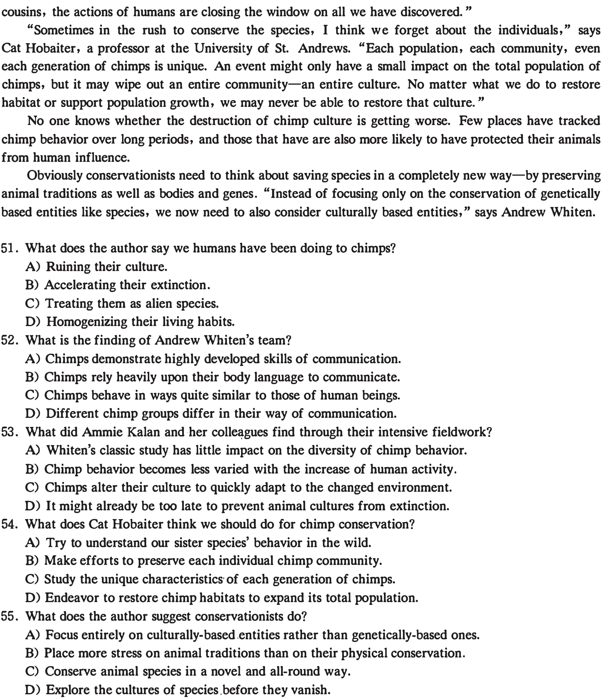

第 36 题 #
36. Students should develop the key skills before they start a project.
本页部分文字层异常，已保留原图文字区域；这些区域随窗口缩放，暂不能重新换行或复制。
点击查看答案
此题暂无可用答案。
大学英语六级 · questions · 2020
题号和章节目录由结构化数据生成。选项统一显示 A.、B.、C.、D.；原标记保留在 JSON 中。
本页部分文字层异常，已保留原图文字区域；这些区域随窗口缩放，暂不能重新换行或复制。


Directions: In this section, there is a passage with ten blanks. You are required to select one word for each blank from a list of choices given in a word bank following the passage. Read the passage through carefully before making your choices. Each choice in the bank is identified by a letter. Please mark the co"esponding letter for each item on Answer Sheet 2 with a single line through the centre. You may not use any of the words in the bank more than once.

本页部分文字层异常，已保留原图文字区域；这些区域随窗口缩放，暂不能重新换行或复制。

Why lifelong learning is the international imsport to success

本页部分文字层异常，已保留原图文字区域；这些区域随窗口缩放，暂不能重新换行或复制。

Just like classical theatre, the old university model produced talent and value for society. We are not advocating its abolition but rather calling for the adaptation of its characteristics to meet the needs of today.
36. Students should develop the key skills before they start a project.
本页部分文字层异常，已保留原图文字区域；这些区域随窗口缩放，暂不能重新换行或复制。
此题暂无可用答案。
37. By acquiring reasoning skills in the first few years of college, students can lay a foundation for lifelong
learning.
此题暂无可用答案。
38. The easy access to learning and rapid technological changes have brought the traditional model of
education under challenge.
此题暂无可用答案。
39. Unbelievable as it may seem, part-time students constitute a considerable portion of the student body
in many universities across the world.
此题暂无可用答案。
40. Some social and managerial skills, which are not easily automated, will be of great importance to
students' future careers.
此题暂无可用答案。
41. A new model of college education should provide students with the knowledge and skills that will make
them more inventive and capable of lifelong learning.
此题暂无可用答案。
42. A mixed student body may change the classroom dynamics and benefit learning.
此题暂无可用答案。
43. The question of who will bear the cost of lifelong learning is a topic of constant debate.
此题暂无可用答案。
44. To the traditional subjects of math and physics should be added a new discipline which combines
computer science with statistics and other components.
此题暂无可用答案。
45. Students who are burdened with family duties might choose to take online courses.
此题暂无可用答案。
Directions: There are 2 passages in this section. Each passage is followed by some questions or unfinished statements. For each of them there are four choices marked A), B), C) and D). You should decide on the best choice and mark ihe corresponding letter on Answer Sheet 2 with a single line through the centre.
Questions 46 to SO are based on the r ollowing passage.
Why does social media trigger feelings of loneliness and inadequacy? Because instead of being real life, it is, for the most part, impression management, a way of marketing yourself, carefully choosing and filtering the pictures and words to put your best face forward.
• Online "friends" made through social ·media do not follow the normal psychological progression of an interpersonal relationship. You share neither physical time nor emotional conversations over the Internet. You simply communicate photographs and catchy posts to a diverse· group of people whom you have "friended" or "followed" based on an accidental interaction. This is not to say that your social inedia friends can't be real friends. They absolutely can, but the two are not synonymous. Generally speaking, there are no unfiltered comments or casually taken photos on our social media pages. And, rightfully so, because it wouldn't feel safe to be completely authentic and vulnerable with some of our "friends" whom we don't actually know or with whom trust has yet to be built.

本页部分文字层异常，已保留原图文字区域；这些区域随窗口缩放，暂不能重新换行或复制。
to negative thoughts and feelings. If the latter is the case, increasing face to face time with trusted friends, and minimizing time scrolling online, will prove to be a reminder that your social network is much more rewarding than any "like," "follow" or "share" can be.
46. What does the author imply social media may do to our life?
此题暂无可用答案。
47. Why do people post comments selectively on social media?
此题暂无可用答案。
48. What are humans inclined to do according to the passage?
此题暂无可用答案。
49. What is the author's view of pictures and posts on social media?
此题暂无可用答案。
50. What does the author advise people to do when they find their online experience unconstructive?
此题暂无可用答案。
Questions 51 to 55 are based on the following passage.
Imagine that an alien species landed on Earth and, through their mere presence, those aliens caused our art to vanish, our music to homogenize, and our technological know-how to disappear. That is effectively what humans have been doing to our closest relatives-chimps ( :k.-KB).
Back in 1999, a team of scientists led by Andrew Whiten showed that chimps from different parts of Africa behave very differently from one another. Some groups would get each other's attention by rapping

It took a long time to convince skeptics that such cultures exist, but now we have plenty of examples of animals learning local traditions from one another.
But just when many scientists have come to accept the existence of animal cultures, many of those cultures might vanish. Ammie Kalan and her colleagues have shown, through years of intensive fieldwork, that the very presence of humans has eroded the diversity of chimp behavior. Where we flourish, their cultures. wither. It is a bitterly ironic thing to learn on the 20th anniversary of Whiten's classic study.

本页部分文字层异常，已保留原图文字区域；这些区域随窗口缩放，暂不能重新换行或复制。

Part 1V Translation ( 30 minutes)